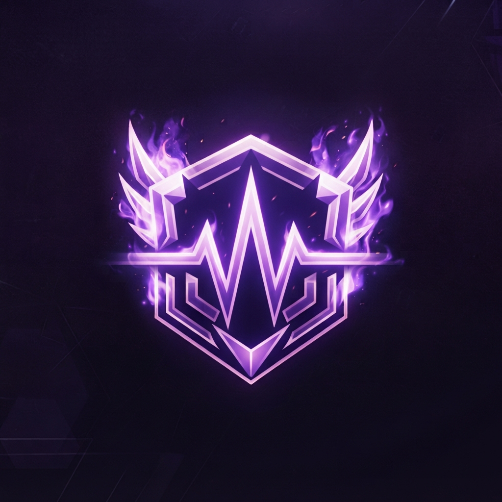
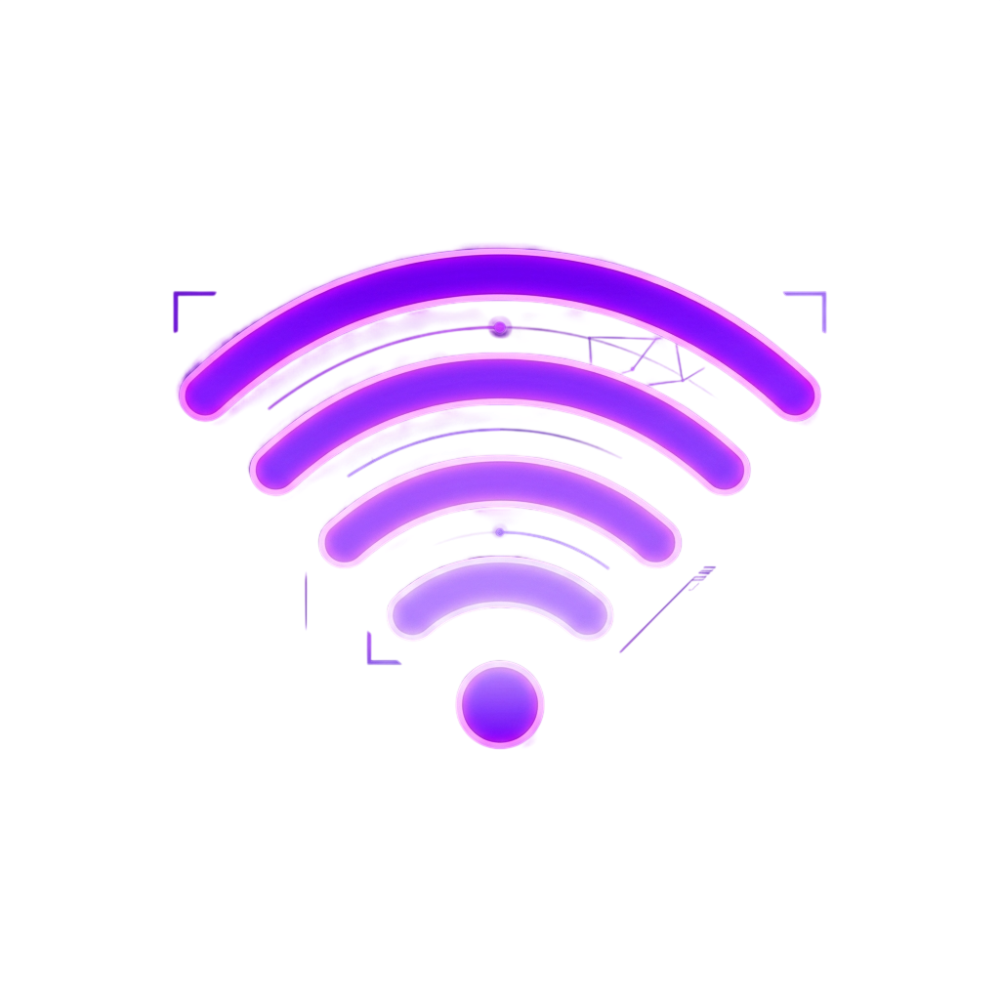
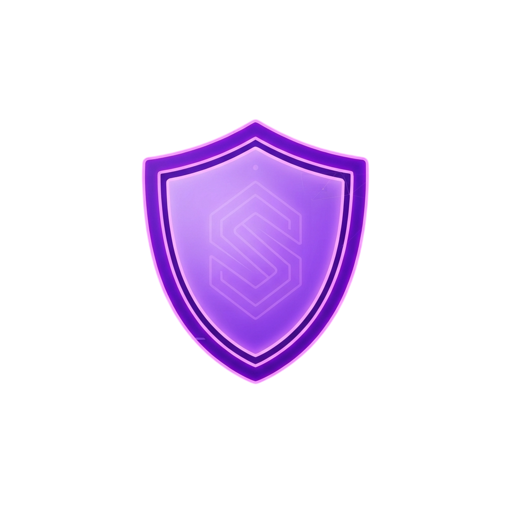

Возрождение соревновательного CS:GO Legacy
Никакого CS2. Только честный матчмейкинг, понятная система Pulse Rating, ручной античит-контроль и та самая ностальгическая механика.
Место для главного скриншота из Figma
Рекомендуемый размер: 1200 × 750 px
Стабильные соревновательные серверы CS:GO Legacy с идеальной регистрацией попаданий и комфортным пингом.

Автоматическая запись демо каждого матча и внимательная ручная проверка всех жалоб от игроков.
Авторизация в один клик через Steam. Никаких сложных настроек — нажал «Быстрый старт», забанил карты и зашёл в игру.
Фиксированные +20 за победу и −20 за поражение. Никаких скрытых формул — ваш ранг зависит только от побед.
Классический соревновательный 5×5 с честной системой вето карт перед началом матча.
Нажмите кнопку поиска и попадите в общую очередь игроков CS:GO Legacy.
Система формирует две сбалансированные команды и назначает капитанов.
Капитаны по очереди убирают карты (A → B → A → B), пока не останется последняя.
Сервер автоматически запускает игру на выбранной карте, а после финала обновляет ваш Pulse Rating (±20).
Минималистичный тёмный интерфейс, созданный с акцентом на скорость и удобство.
Экран выбора карт и рангов
800 × 500 pxНаглядное отображение доступных карт и вашего прогресса на каждой из них.
Экран бана карт (Вето)
800 × 500 pxИнтерактивное вычёркивание карт капитанами в реальном времени.
Экран профиля и статистики
800 × 500 pxИстория матчей, K/D, винрейт и доступ к скачиванию демо-записей.